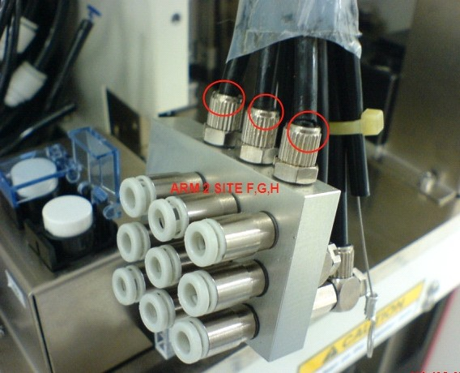
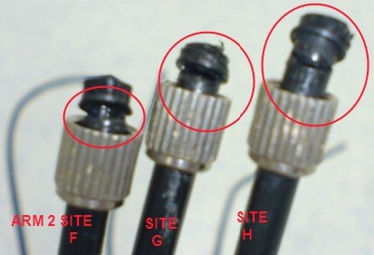
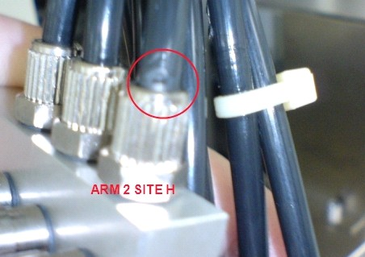

Service History
Subject: UTL3 Index Arm tubing broken
Handler Model: NS-7080
Controller: RC520
Date: 1 Apr 2008
Action
This is a follow up for Index Arm tubing broken at UTL3, 0030-NS7K.
01/04
Checked damaged tubing for NS7080-01 S/N:181384 and found 2 more broken tubings. Replaced total 3 tubings on site F,G,H at arm 2.
Checked arm 1 tubing condition OK.
Run dummy units LDFCQFN 4x6.5 for verification OK.
Door lock cylinder YV148 for NS7080-01 unable to trigger when handler HOME or START. Swapped YV147 empty tray arm cylinder over still not OK. Found Trayout96 remote I/O module triggering signal for door lock valve YV148 NG, lighting on module for this address dim. Measured output undervoltage.
Swapped with unloader tray I/O module to confirm module NG.
Swapped back YV148 door lock valve to confirm valve NG.
Raise warranty S0298 and S0299.
02/04
Requested by Surasak to check NS7080-02 S/N: 181429 index arm tubing condition.
Found arm 2 site H tubing broken also at the fitting area. Replaced 1 pc. This handler just buy off in February and only in production for 2 weeks and tubing broken.
Checked condition of arm 1 tubing OK.
Shuttle 1 vibrate when index arm pickup and place on shuttle. Reteach shuttle 1 P21 and P23 loading and unloading position.
|
 NS7080-01 Arm 2 Site F, G, H tubings broken |

|
|
 NS7080-02 Arm 2 Site H tubing broken |
Cause